Greetings
"An open source geospatial implementation case study from the Energy sector"
about/me
Sam Franklin
GIS Manager @
@samfranklin
sam.franklin@lr-senergy.com
Why am I here
?
Be a good open source citizen
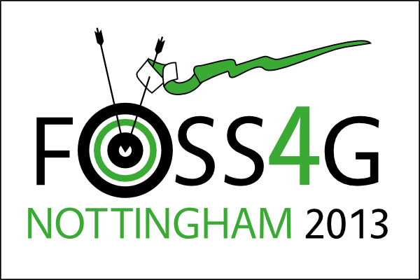
act1-what we did first
act2-what we're doing now
act3-what worked/ what failed / what's next
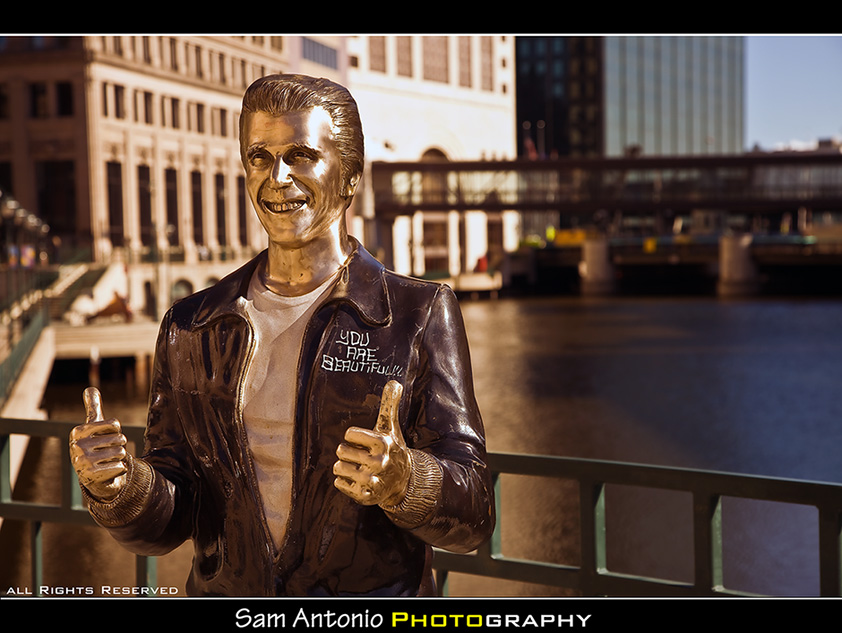
>> Is this PDF the latest version?
>> No, I thought Bob emailed you?
>> Bob's on holiday
UH-OH
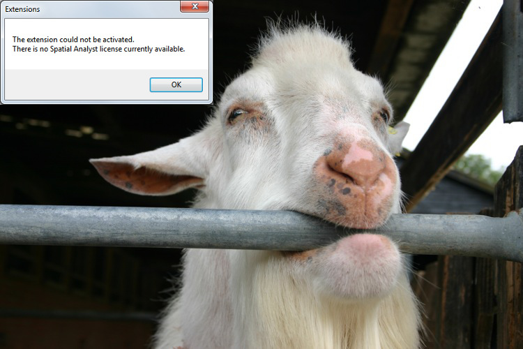licence frustration
 real time data
real time data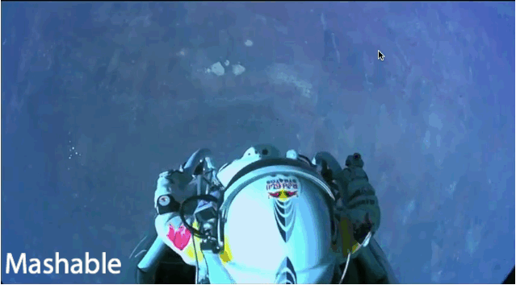 < quick deployment
Great, what do we need and how?
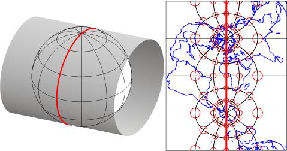non WGS CRS support
outsource or on-premises ArcGIS Server?
or arcgis online =! time, cost, licencing prohibitive
open source gives you access to the ingredients
the wall of terror
deployed £35/pm hosted GeoServer + postgis server
very capable mentoring from and
deployment
"If you are not embarrassed by the first version of your product, you've launched too late."
-- Reid Hoffman
"If you are not embarrassed by the first version of your product, you've launched too late."
-- Reid Hoffman
Minimal Viable Product
what then?
got some clients
momentum

hired a geospatial web developer. Yay! [Thank goodness]
version 2.1.7 of 'iris'
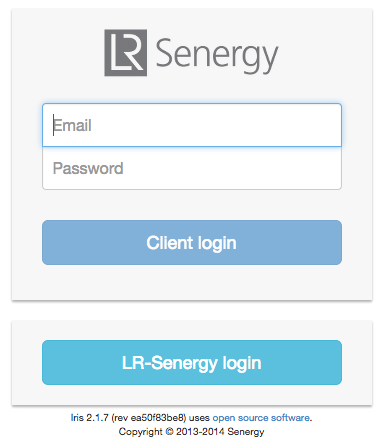
servers
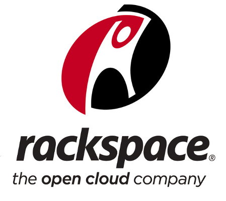 +
server apps

+ Geoserver
client side = JQuery/Bootstrap + OpenLayers2
custom measure/travel time control
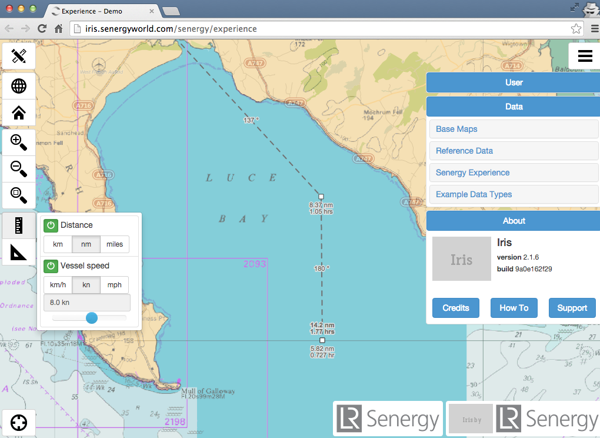
custom dashboards via Highcharts
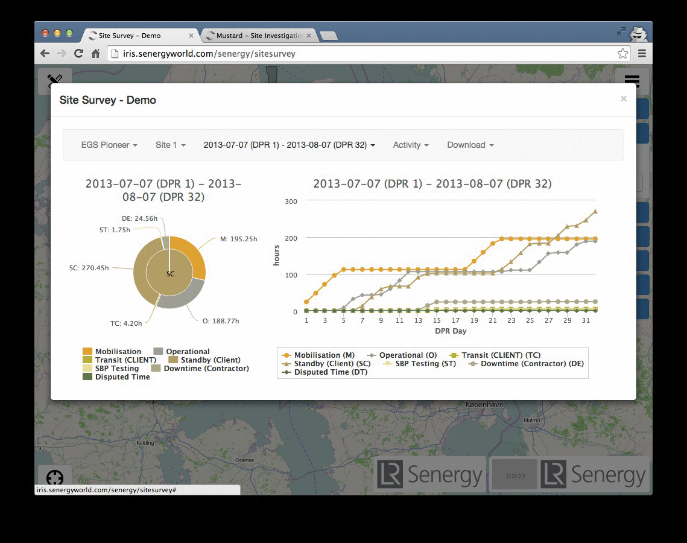
multi-source realtime vessel tracking with history
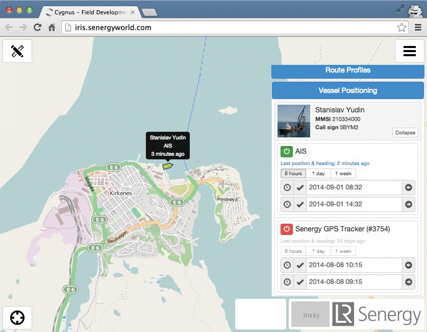
file explorer UI and map interaction
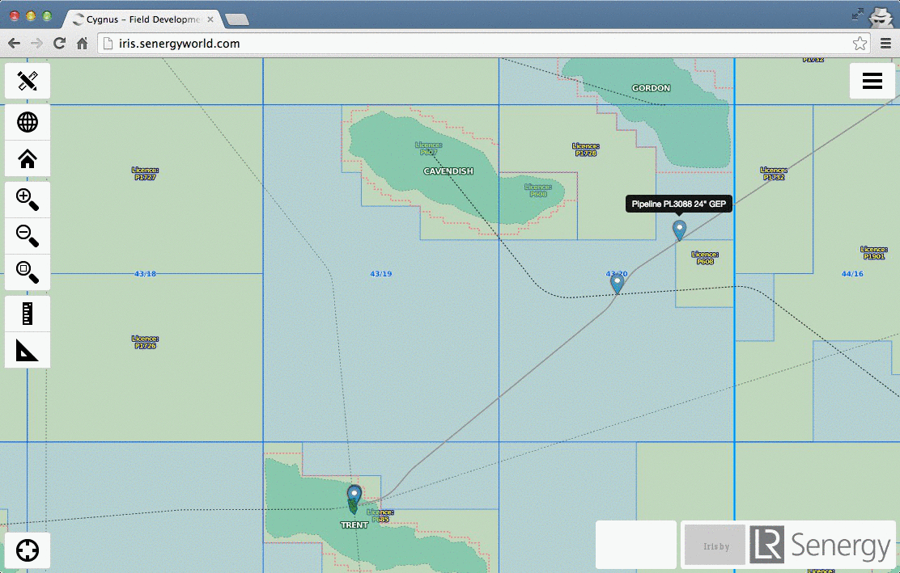
navigation TMS + our own custom rolled marine TMS
...using tilemill // mapnik xml // mapproxy = sweet.
Tiled CAD data? Yes. Seriously. Be careful of distortion
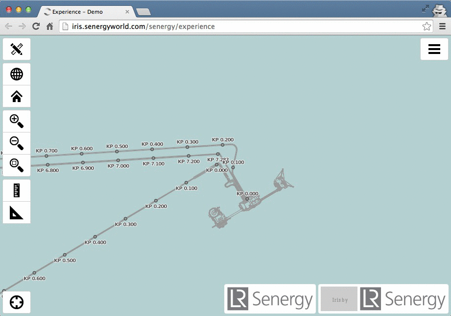
eyes open
multi-area xyz
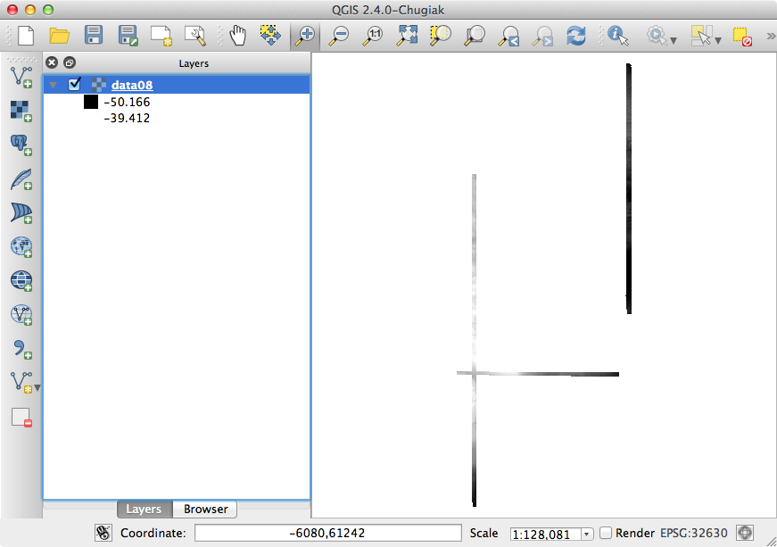
complex extent xyz
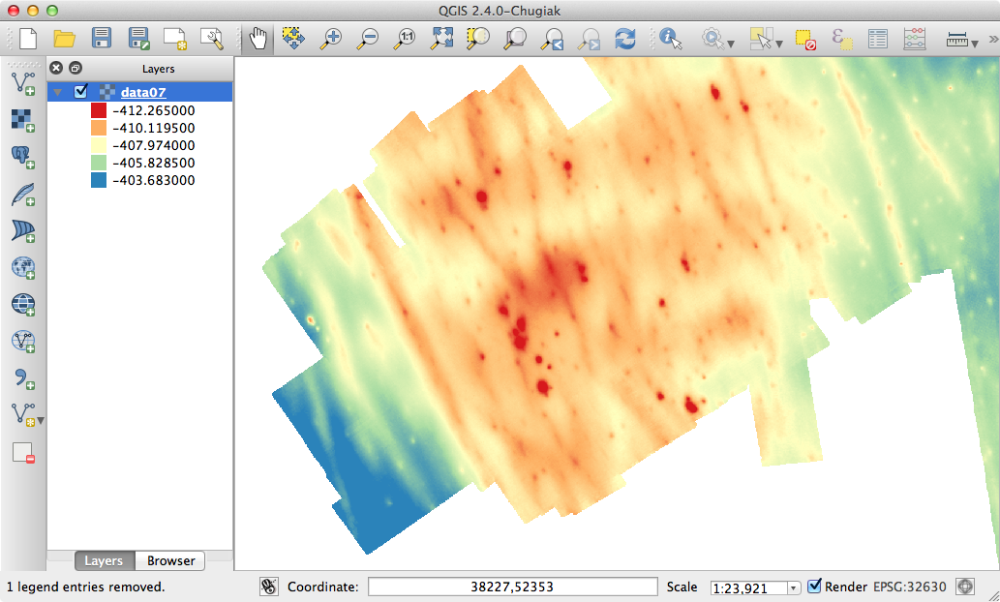
bash +
ogr2ogr makes for a happy database
enterprise postgreSQL
1-master
2-slaves
#FAIL
QGIS implementation
ill-thought out
Free as in Freedom 'to fail'
next?
M.E.A.Nfullstack JavaScript with NoSQL for application data
How to contribute?
"Do what you can, with what you have, where you are"
Theodore Roosevelt
image credits //